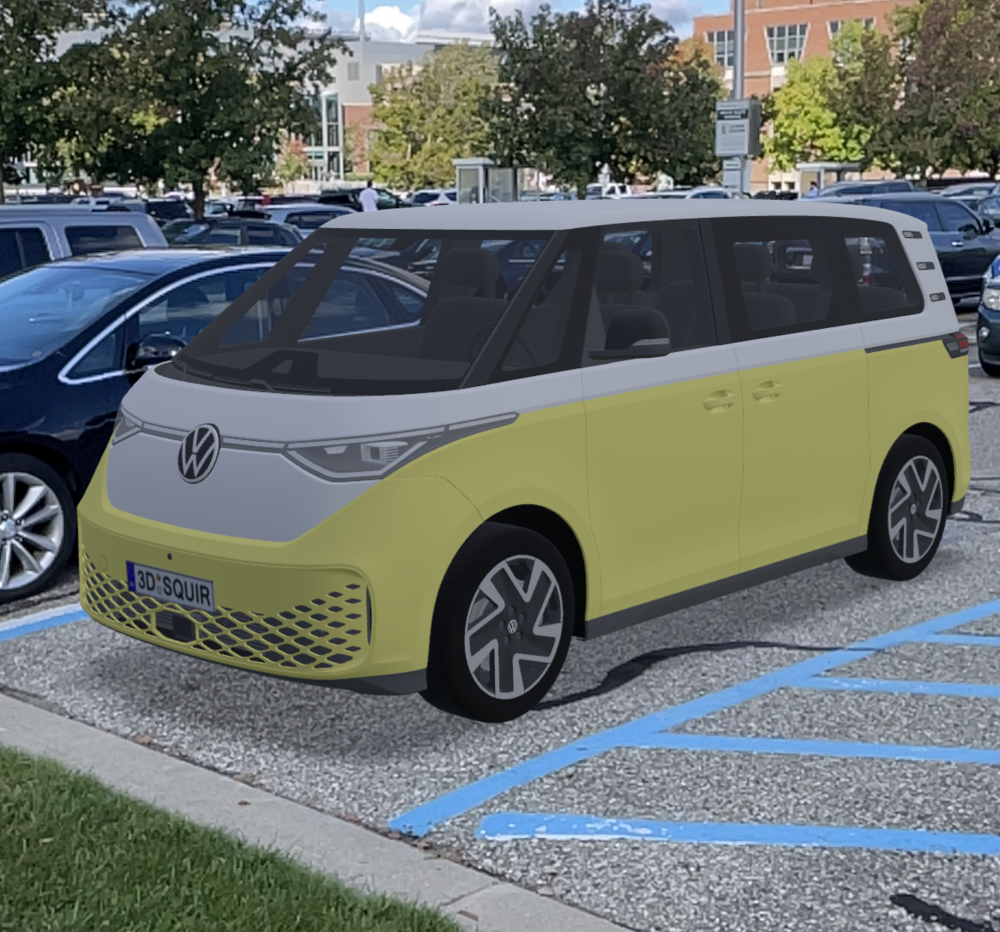
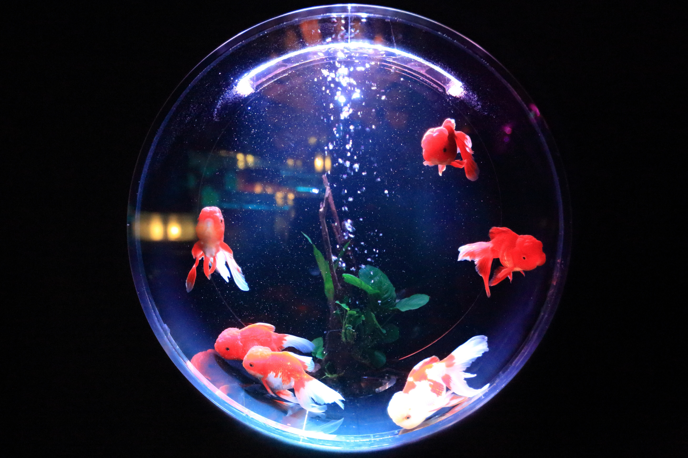

An application I created as part of a team of developers during the MSU Computer Science Capstone Course for our client Volkswagen.
The application allows users to customize their own Volkswagen vehicles with different colors and accessories. Users
can then display the vehicle in full size wherever they would like. The backend of the application contains user information
and model files. The backend can be accessed via the Admin Panel, which allows the model files to be added to, edited
or deleted without having to access the database directly.
A Michigan State themed side-scroller reminiscent of a Mario game. The goal is to collect as much money as possible while avoiding enemy gnomes. Completed in a group project that introduced me to an example development process and provided some insight on how a team might work on an application together.
Using keyframes and tweening allows the user to move and rotate the figures. Through this the user can create basic animations that move as the timeline moves. Learned a few different animation styles during this project and increased my knowledge of using WxFormBuilder to build and add to a GUI.

An aquarium that users can add different types of fish to. Different fish do different things and users can save the states of their aquariums using XML. One of my first experiences using WxFormBuilder to create a GUI as well as adding simple animations that factor in time.
A traffic jam assist software system developed as part of a group in CSE 435 Software Engineering. This system would
exist within an automotive vehicle and would allow the driver to set a specific distance that the vehicle would
maintain. The software allows the user's vehicle to operate while in traffic. The SRS document provides
requirements, diagrams, constraints, and models that provide all information necessary about the system and its functions.

My resume and unofficial transcript. Covers my education, experiences, jobs, and skills.
My resume and unofficial transcript. Covers my education, experiences, jobs, and skills.